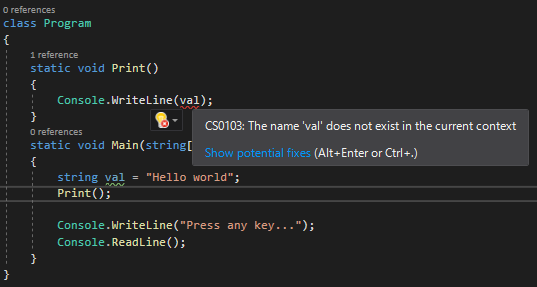

[C#] 24. ラムダ式(匿名関数)とAction、Func関数を使い方、そしてクロージャ(Closure)
こんにちは。明月です。
この投稿はC#でラムダ式(匿名関数)とAction、Func関数を使い方、そしてクロージャ(Closure)に関する説明です。
以前の投稿でデリゲート(delegate)に関して説明したことがあります。
link - [C#] 23. デリゲート(delegate)
デリゲートとは関数ポインタで関数をインスタンスのポインタみたいに管理ができるような機能ということです。つまり、関数をポインタで管理ができればもっと考えると関数の名前が要らずに関数を作成することができます。
ラムダ式とは匿名関数の意味とおりに関数名せずに作成が可能な関数です。
using System;
namespace Example
{
// クラス生成
class Program
{
// デリゲート宣言
private delegate void Print(string val);
// デリゲートリスト
private static Print list;
// 実行関数
static void Main(string[] args)
{
// 匿名関数追加
list += (val) =>
{
// コンソール出力
Console.WriteLine("Lambda1 " + val.ToString());
};
// 匿名関数追加
list += (val) =>
{
// コンソール出力
Console.WriteLine("Lambda2 " + val.ToString());
};
// デリゲート実行
list("Hello world");
// 任意のキーを押してください
Console.WriteLine("Press any key...");
Console.ReadLine();
}
}
}
上の例をみれば返却式はなく、Stringのパラメータを受け取るデリゲートを作成しました。そしてMain関数で(val) => {}の形式のラムダ(匿名関数)を作ってデリゲートリストに追加しました。
ここでvalのデータタイプはデリゲートで宣言したstringのタイプのデータになり、返却タイプはないのでreturnは要りません。
そして中括弧({})のスタック領域で関数が呼び出したら実行するプログラムのコードを実装します。
実行すればlistのデリゲートを実行して登録されて二つのラムダ式が実行することを確認できます。
そうならこのラムダ式を使うためにはそれを合わせてデリゲートを常に宣言するべきだと思いますが、Func関数とAction関数を利用すればデリゲートが要りません。
using System;
namespace Example
{
// クラス生成
class Program
{
// 実行関数
static void Main(string[] args)
{
// 匿名関数、最後のパラメータは返却タイプ
Func<int, string> func = (val) =>
{
// intタイプの値を受け取って100を掛ける。
int ret = val * 100;
// stringタイプで返却する。
return ret.ToString();
};
// 匿名関数、返却値がなし
Action<string> action = (val) =>
{
// コンソール出力
Console.WriteLine("Action = " + val);
};
// 匿名関数funcを呼び出す。 -> パラメータはintタイプを受け取って返却値はstringタイプ
string data = func(10);
// 匿名関数actionを呼び出す。 -> パラメータstringタイプを渡す。
action(data);
// 任意のキーを押してください
Console.WriteLine("Press any key...");
Console.ReadLine();
}
}
}
上の例では匿名関数を作成しましたが、delegateを宣言せずにFuncとAction関数を使いました。
Func関数は返却値がある匿名関数で、Action関数は返却値がない匿名関数です。
Func関数の最後のパラメータは返却値のデータタイプです。その以外は順番とおりのパラメータのデータタイプです。
ラムダ式というのは実は文法規約を破壊する方法です。ラムダ式が使うことも楽だしデリゲート(delegate)やリストとFunc、Actionを適当に混ぜて作成するならプログラムを実装する時に凄く楽になります。
問題はラムダ式が多くなるとソースは凄く複雑になるし、可読性が凄く悪くなる欠点があります。そのため、一般関数を使うことができれば関数名を作成してラムダ式を使うことを抑える方が良いです。
そうならラムダ式をいつ使うほうが良いか？デザインパターンのオブザーバーパターンを実装する時、つまり、イベントやコールバック関数を実装する時に使う方が良いです。
using System;
namespace Example
{
// クラス生成
class Program
{
// 出力関数、Action関数はコールバック関数で関数が終わるタイミングで呼び出す。
// パラメータを入れなかったらnullになる。
static void Print(string data, Action<string> cb = null)
{
// パラメータdataの値に文字列を追加
string ret = "Print " + data;
// コンソール出力
Console.WriteLine(ret);
// コールバック関数がnullではなければ
if (cb != null)
{
// コールバック関数を呼び出す。
cb(ret);
}
}
// 実行関数
static void Main(string[] args)
{
// Print関数呼び出す。
Print("Test");
// 改行
Console.WriteLine();
// Print関数を呼び出す、関数処理が終わるとコールバック関数が呼び出す。
Print("Hello world", (val) =>
{
// データを受け取って文字列を追加
string ret = val + " Call back!";
// コンソール出力
Console.WriteLine(ret);
});
// 任意のキーを押してください
Console.WriteLine("Press any key...");
Console.ReadLine();
}
}
}
上の例はデザインのオブザーバーパターンです。javascriptコードでよく見えるコールバック関数です。
オブジェクト指向プログラミング(OOP)でデータをオブジェクト(Object)化する時、必要なコールバックタイプやイベントタイプ、つまり、特定な関数が呼び出した時に呼び出される形式で作成することの意味です。
イベントはeventキーワードを説明する時に詳細に説明します。
基本的にオブザーバーパターンを設計する時、ラムダ式を使うがその以外はクロージャ(Closure)機能を使うために実装します。
using System;
namespace Example
{
// クラス生成
class Program
{
// 実行関数
static void Main(string[] args)
{
// 変数生成
string val = "Hello world";
// 匿名関数生成
Action action = () =>
{
// コンソール出力
Console.WriteLine(val);
};
// 関数呼び出す。
action();
// 任意のキーを押してください。
Console.WriteLine("Press any key...");
Console.ReadLine();
}
}
}
上の例はMain関数でAction関数を使って匿名関数を作成しました。でも、この匿名関数はパラメータがありません。
そうなのにMain関数で生成したstring valの値を持ってきて使うことができます。もし、これが匿名関数ではなく、一般関数ならとんでもない実装です。なぜなら、スタック領域が全然違う領域だからです。

でも、このラムダ式はソース上のすぐ上のスタック領域の値を持ってくることができます。もちろん、持ってきて修正もできます。これがクロージャ(Closure)機能です。
こんな機能は以外に関数の複雑度をずいぶん減らすことができます。つまり、パラメータで渡すべきなデータあるいはメンバー変数を使うべきな値をローカル変数でクロージャ(Closure)機能で単純なソースコードを作成することができます。
しかし、これが作成しすぎなら可読性が悪くなるので、状況に合わせて、仕様に合わせて作成する方が良いです。
ここまでC#でラムダ式(匿名関数)とAction、Func関数を使い方、そしてクロージャ(Closure)に関する説明でした。
ご不明なところや間違いところがあればコメントしてください。
- [C#] 31. アトリビュート(Attribute)を使い方2019/07/18 20:22:16
- [C#] 30. Linq関数式を使う方法2019/07/17 23:06:42
- [C#] 29. Linqクエリ式を使い方2019/07/17 20:57:00
- [C#] 28. リスト(List)とディクショナリ(Dictionary)、そしてLinq式を使い方2019/07/16 22:40:03
- [C#] 27. varキーワードとdynamicキーワード2019/07/16 20:41:27
- [C#] 26. 例外処理(try ~ catch)する方法2019/07/16 00:59:34
- [C#] 25. イベント(event)キーワードを使い方2019/07/16 00:48:03
- [C#] 24. ラムダ式(匿名関数)とAction、Func関数を使い方、そしてクロージャ(Closure)2019/07/16 00:36:19
- [C#] 23. デリゲート(delegate)2019/07/15 02:25:26
- [C#] 22. インデクサー(indexer)を使う方法2019/07/13 01:06:04
- [C#] 21. C#のプロパティ(Property)2019/07/13 00:56:20
- [C#] 20. オブジェクト指向プログラミング(OOP)の4つの原則(カプセル化、抽象化、継承化、多相化(ポリモーフィズム))2019/07/12 00:17:35
- [C#] 19. 列挙型(enum)を使う方法2019/07/11 23:13:25
- [C#] 18. 構造体(Struct)、そして値型を参照するタイプ(Reference of value type)と参照型を参照するタイプ(Reference of reference type)2019/07/10 23:57:25
- [C#] 17. thisとbaseのキーワード2019/07/10 23:43:56
- [Java] 58. EclipseでSpring bootのJPAを設定する方法2022/02/23 18:11:10
- [Java] 57. EclipseでSpring bootを設定する方法2022/02/22 19:04:49
- [Python] Redisデータベースに接続して使い方2022/02/21 18:23:49
- [Java] Redisデータベースを接続して使い方(Jedisライブラリ)2022/02/16 18:13:17
- [C#] Redisのデータベースを接続して使い方2022/02/15 18:46:09
- [CentOS] Redisデータベースをインストールする方法とコマンドを使い方2022/02/14 18:33:07
- [Design pattern] 3-6. ステートパターン(State pattern)2021/11/17 20:04:47
- [Design pattern] 3-5. メメントパターン(Memento pattern)2021/11/16 20:01:36
- [Design pattern] 3-4. イテレータパターン(Iterator pattern)2021/11/15 19:31:28
- [CentOS] Linux環境(CentOS)でCassandra(NoSQL DB)をインストールする方法(DBeaverブラウザでNoSQL使い方)2021/11/12 17:33:58
- [Design pattern] 3-3. コマンドパターン(Command pattern)2021/11/05 17:01:42
- [Window] apache-tomcatでロードバランシング(Load balancing)する方法とセッションクラスタリング（セッション共有）2021/11/05 16:58:45
- [Window] Apacheでmod_jkとmod_proxyの差異、apacheでtomcatのwebsocketのプロキシフォーワードする方法2021/11/05 16:55:05
- [PHP] Apache環境の同じホスト中でPHPとJava(Servlet)を同時に起動、運用する方法2021/11/05 16:52:04
- [C#] 61. ウィンドウフォーム(Window form)でスレッド(Thread)を使い方、クロススレッド問題解決2021/11/04 19:29:51